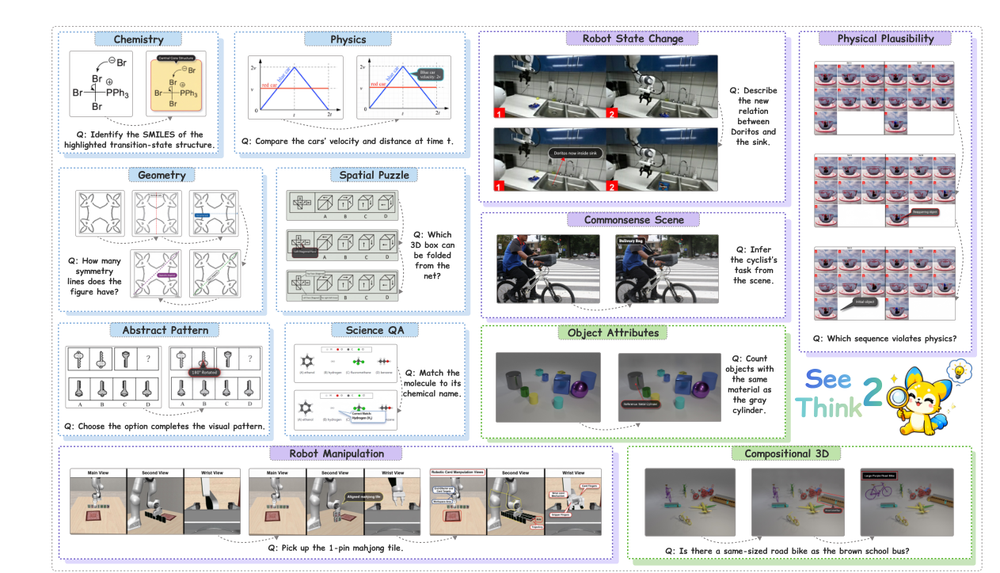
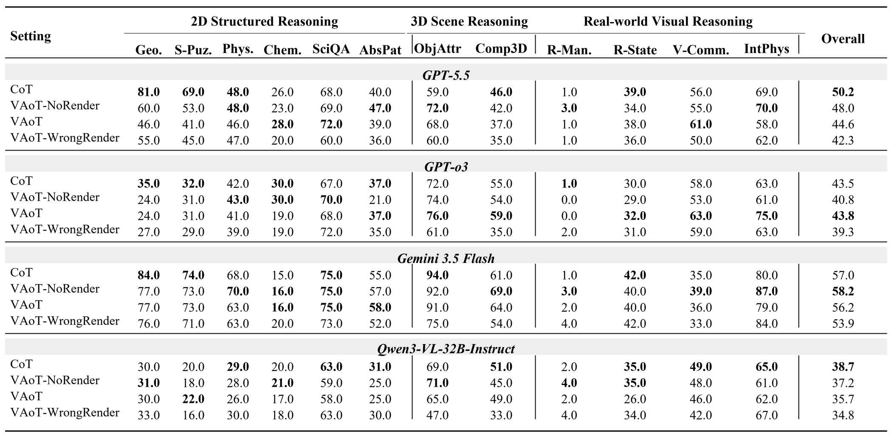

2D Structured
Geometry, spatial puzzles, physics, chemistry, science QA, and abstract patterns.
Motivation
Beyond final answers
Multimodal models increasingly draw auxiliary lines, annotate regions, invoke visual tools, and construct intermediate images. Yet final-answer accuracy cannot tell us whether the model chose a relevant visual action, whether that action was rendered faithfully, or whether the returned state influenced later reasoning.
See2Think provides a unified framework for answering all three questions. It combines a visually grounded benchmark with an observable and intervenable inference protocol, enabling matched outcome-level and process-level evaluation.

Figure 1. See2Think moves beyond final-answer evaluation to diagnose action relevance, render faithfulness, and feedback uptake.
Benchmark
See2ThinkBench
Every category contains 100 samples. Caption-only solvability filtering reduces text-dominant shortcuts, while a unified answer interface supports consistent evaluation.

See2ThinkBench at a glance. Twelve task categories organized into three visual reasoning environments.
Geometry, spatial puzzles, physics, chemistry, science QA, and abstract patterns.
Object attributes and compositional reasoning over synthetic 3D environments.
Robot manipulation, state change, commonsense scenes, and physical plausibility.
Protocol
Visual Action-of-Thought
VAoT records alternating textual thoughts, structured visual actions, rendered states, and subsequent reasoning. Because every visual action is externally executed and inspected, the trajectory supports controlled intervention and process-level diagnosis.

Four matched settings. CoT, VAoT-NoRender, VAoT, and VAoT-WrongRender isolate planning, execution, and dependence on visual feedback.
Does the selected operation target evidence that matters for the task?
Does the returned image correctly realize the requested visual action?
Does subsequent reasoning incorporate information from the visual state?
Results
What we found

No single setting dominates. The best visual-reasoning strategy changes across model families and visual environments.
Direct perception leads on explicit 2D diagrams, action planning slightly leads in 3D scenes, and real-world tasks show no clear aggregate winner.
Models usually select a relevant visual action, but faithfully executing that action remains substantially harder.
Correct rendering may add little net accuracy, while corrupted visual feedback can still cause measurable performance degradation.

Process-level diagnosis. High action relevance contrasts with lower render faithfulness; high feedback uptake does not necessarily produce higher accuracy.
@article{yan2026see2think,
title = {See2Think: Do Multimodal Models Really Use
Intermediate Visual States?},
author = {Yan, Siyu and Yan, Zhuoran and Xu, Haiying and
Zhou, Panhao and Chen, Jingyu and Ji, Chenhao and
Cao, Shuo and Zhang, Yongheng and Liu, Haoze and
Zhang, Siyu and Gu, Xiwen and Liu, Yihao and
Wang, Alex Jinpeng},
year = {2026}
}